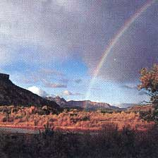

Earth Diary
Wilderness vs.intellectual desert.
THE REAGAN ADMINISTRATION advanced some controversial positions over its eight years, but none has proved to be a greater intellectual washout than that declared by Edwin S. Meese III a few days before he packed his bags and cleared out of the Justice Department.
The policy of the federal government, said the Attorney General, is not to claim water rights for wilderness purposes. This opinion could be interpreted to cover not only congressionally designated wilderness, but also national wildlife refuges.
Waterless wilderness. Just because it's a self-canceling idea, an oxymoron, doesn't mean it isn't the official policy of the government-at least at present. Strenuous efforts are under way to reverse the situation.
The Meese opinion arose following a series of legal victories by the Sierra Club Legal Defense Fund in the federal court in Colorado. Staff attorney Lori Potter had sued the Forest Service some years back for that agency's refusal to claim water for its 24 wildernesses in water-rights adjudications being conducted in the state.
The court ruled quite bluntly that "wilderness" is a legitimate and important land classification and that the Forest Service has a legal obligation to secure water to sustain it. "It is beyond cavil that water is the lifeblood of the wilderness areas," wrote Judge John L. Kane. "Without water, the wilderness would become deserted wasteland." He ordered the Forest Service to submit to him its plans for securing water for the wilderness lands under its control, an order to which the agency acquiesced with characteristic bad grace.
Judge Kane's ruling affected only National Forest Service wilderness in Colorado, but the principle is equally applicable throughout the country.
It seems so elementary, this notion that wilderness needs water, that it's hard to see how there'd be much argument on the point. The current argument isn't biological, however, it's political.
Water, especially in the West, is scarce and precious. And for those wildernesses that do not include the headwaters of their rivers and streams, there is always a chance that someone will find an upstream use for the water-for agriculture, residential consumption, mining-which can not only deplete water flow needs but also pollute what's left in the streambed.
Meese, not for the first time, was on shaky legal ground. He took refuge behind the excuse often thrown up by people who want to pander to selfish local interests: The states should be left to decide whether to provide water for federal wildernesses.
This is wholly unsatisfactory, of course, since the lands in question are the property of the federal government-they belong equally to all citizens of the republic, in other words-and the states have often been unblushing in placing commercial development above just about everything else. Clearly, a free-flowing river's best chance to stay damfree in water-hungry Utah or Nevada or Colorado or Arizona is under the wing of the federal government.
This somewhat abstract issue is playing out in a very concrete fashion at present in a Utah courtroom. There, an adjudication is being conducted over the Virgin River, whose several tributaries rise within or just outside Zion National Park in southwestern Utah. These tributaries flow through the park, join just beyond the park's southern boundary, clip off a corner of Arizona and then disappear into Lake Mead in Nevada.
On its way across Arizona, the Virgin flows through the Beaver Dam Mountains Wilderness, which lies within the Paiute Primitive Area and is managed by the Bureau of Land Management.
The adjudication has been under way for many months, but it stalled for a time as the various parties sitting around the table to divide up the river's flow awaited the federal government's claim for water from the river to support the park and the wilderness. In late summer, 1988, the government announced it would claim for Zion as much water as is needed for "park purposes," which will most likely protect the park adequately, assuming the government follows through. There's been no word yet with respect to the wilderness area, but the Meese policy suggests that the government will claim not a drop.
A wriggly problem has presented itself recently to the Department of the Interior, however: an endangered small fish called the woundfin minnow. Small populations of the fish live in the Virgin, both up- and downstream from the wilderness. Larry Silver of the Legal Defense Fund has recently written to Secretary of the Interior Donald Hodel, pointing out this situation and warning Hodel that if the department doesn't act to secure enough water to ensure the survival and recovery of the fish, he will be in violation of the Endangered Species Act. A suit is all but certain to follow. Stay tuned.
The National Audubon Society has just released its annual Wildlife Report, the latest in an extraordinarily valuable series that began in 1985. Each volume has an extensive profile of a federal conservation agency (this year's is the National Marine Fisheries Service), a flock of chapters on the natural history and status of various species, a couple hundred pages on selected programs of various federal agencies, another series of articles on "conservation challenges" and, finally, a handy series of appendices with addresses and phone numbers. It is an amazing job and an invaluable resource. Audubon Wildlife Report 1988/89, Academic Press (Harcourt Brace Jovanovich), 1988, 817 pages, $49.95 hardback, $24.95 paperback. Previous editions are still available.
Tom Turner, a writer and editor with 20 years' experience in the environmental field, is staff writer for the Sierra Club LegalDefense Fund, an independent environmental law firm that represents many organizations across the country. It is supported by private donations. For more information, write Sierra Club Legal Defense Fund, 2044 Fillmore St., San Francisco, CA 94115.
|
 The Virgin River currently flows through the Beaver Dam Mountains |
|
|